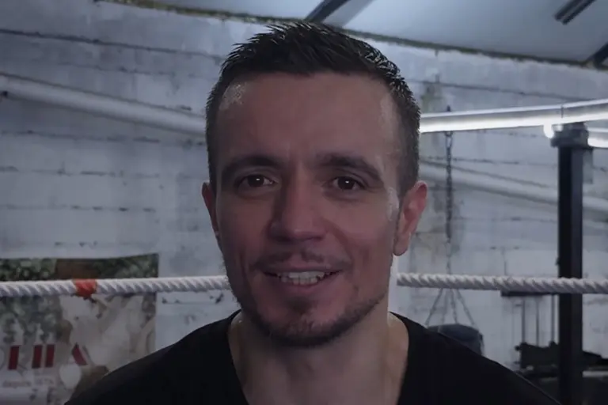
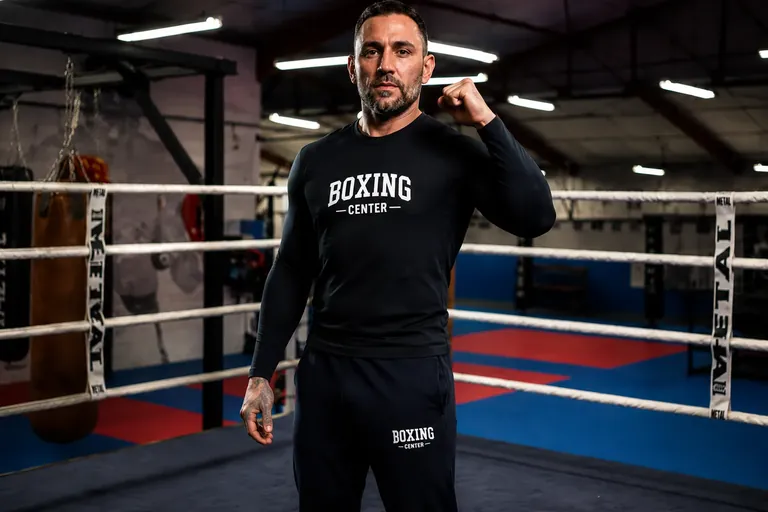

Encadrement
Coaches présents pour corriger, sécuriser et te faire progresser sans ego inutile.
Tu n’as jamais mis les gants ? Parfait. Voici les réponses claires pour oser ta première séance — sans pression, avec le bon créneau.
Oui. Les cours pieds-poings accueillent les débutants. On te montre la garde, les déplacements, les premiers coups. Personne ne te jette dans un sparring dès le jour 1.
Pour l’essai : tenue de sport confortable, chaussures adaptées si demandé en salle, gourde. Gants, bandes et protège-tibias : tu pourras t’équiper après les premières séances (souvent prêtés ou conseillés sur place).
Adultes sur les créneaux Boxe Thaï / K1 et Boxe Pieds Poings. À États-Unis, école jeunes dès 3/6 ans (samedi), puis 7/11 et 12/16 (mercredi & samedi). Demande conseil selon l’âge de ton enfant.
Non. La condition se construit en cours. Tu avances à ton rythme : technique d’abord, volume ensuite. Mieux vaut une séance régulière qu’un sprint impossible.
Accueil → échauffement collectif → technique guidée → paos ou sac selon le jour → retour au calme. Tu suis le groupe, le coach ajuste. Voir aussi le déroulé type.
Non. Le sparring se propose quand tu es prêt, avec consignes claires et contrôle. Tu peux progresser longtemps en technique, paos et sac sans sparring.
Saint-Cyprien : Boxe Thaï / K1 — idéal centre-ville, midi & soir.
États-Unis : Boxe Pieds Poings (Kick / K1) — fort volume + jeunes.
Lis Kick Boxing, K1 ou Boxe Thaï pour affiner — les créneaux restent ceux du planning officiel.
Choisis selon ton quartier et ton emploi du temps. Compare sur Nos salles ou appelle le 05 62 24 46 82.
Garde, footwork, directs, premiers kicks. Habituer le corps au rythme de séance.
Enchaînements poings-pieds, paos plus longs, meilleur souffle.
Volume sac, drills partenaires, éventuel sparring technique si tu le souhaites.

Coaches présents pour corriger, sécuriser et te faire progresser sans ego inutile.

Exigeante et bienveillante. Tu viens pour apprendre à combattre — et à te dépasser.
Appelle, choisis Saint-Cyprien ou États-Unis, viens comme tu es.